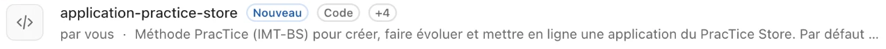

On peut développer une application pour un service, un groupe… voire une seule personne.
⚖️
On paie à l'usage
Des appels d'API facturés à la consommation, pas un abonnement par personne.
30 octobre 2026Vibe coding & ingénierie pédagogique
Démo
Le PracTice Store · côté public
Des outils ouverts à tous
SmartReviz
Des modules de révision pour Moodle : QCM, flashcards, synthèses.
Accès libre
IMT Smart Minutes
De l'enregistrement d'une réunion à son compte rendu.
Adresse de l'école
Ateliers de réflexion
Des questions de haut niveau taxonomique à partir d'un document.
Accès libre
Contrat pédagogique IA
Un contrat sur le bon usage de l'IA générative, à faire signer aux étudiants.
Accès libre
LearnyBot
Un chatbot fondé sur son cours, à intégrer dans Moodle ou sur un site.
Sur demande
Suggestions LinkedIn Learning
Une fiche PDF de cours suggérés pour son propre cours, reçue par mail.
Adresse de l'école
Cliquer pour lancer la démo · practice-imtbs.eu
30 octobre 2026Vibe coding & ingénierie pédagogique
Le PracTice Store · côté privé
Un espace par service
Le plus intéressant : des applications réservées, ouvertes selon le profil de chacun. D'autres espaces suivront.
🧭
PracTice
L'équipe d'ingénierie pédagogique.
Traduction vidéo LearnyBot Montage PédagoFlash
✉️
Admissions
Le pôle Admissions.
Suggestions de réponse Enrichir la base de l'agent
🌤️
Scolarité
La scolarité du PGE.
Météo des promos Edusign+
📘
Enseignants
Les enseignants de l'école.
Syllabo
30 octobre 2026Vibe coding & ingénierie pédagogique
Démo
Espace PracTice
Les outils de l'équipe pédagogique
🎬
Traduction vidéo FR → EN
On dépose une vidéo en français : HeyGen la double en anglais et produit ses sous-titres.
HeyGen · n8n
🤖
LearnyBot
Créer les chatbots des enseignants (et les nôtres) : un cours devient un assistant qui ne répond qu'à partir de ses documents.
Qwen via ILaaS · n8n
🎙️
Montage PédagoFlash
L'audio brut du podcast devient un épisode monté : coupes validées sur la transcription, musique d'introduction et de conclusion, titre et chapitres.
Voxtral · Qwen · n8n
30 octobre 2026Vibe coding & ingénierie pédagogique
Démo
Espace Admissions
Répondre plus vite aux candidats
✉️
Suggestions de réponse Pilote
Branchée sur la boîte mail du service : chaque message reçu arrive avec une proposition de réponse, classée par gestionnaire. On relit, on copie, on colle.
Agent Admissions · Qwen via ILaaS · n8n
📚
Enrichir la base de l'agent Pilote
Le service ajoute lui-même une information ou un extrait de document de référence, après validation par un responsable.
Validation humaine
Des outils évolutifs : chaque service peut enrichir lui-même son agent.
30 octobre 2026Vibe coding & ingénierie pédagogique
Démo
Espace Scolarité
Des tableaux de bord qui répondent
🌤️
Météo des promos
Effectifs de la formation initiale au fil des rapports déposés
Courbes par classe, programme et profil
Départs cumulés dans l'année
Un assistant pour poser ses questions
📋
Edusign+
Présences et absences par étudiant et par promotion
Absentéisme par jour et par créneau horaire
Étudiants en alerte à contacter
Un assistant pour poser ses questions
30 octobre 2026Vibe coding & ingénierie pédagogique
Démo
Espace Enseignants
Syllabo : le syllabus pas à pas
Choisir ses blocs de compétences
Décrire les activités et les types d'évaluation
Rédiger la présentation, relier le cours aux ODD
Les règles de l'école vérifiées en direct
L'IA aide à formuler et à traduire (FR · EN)
Export en PDF ou copie dans OpenPortal
📘
Des spécificités de l'école intégrées
L'outil connaît le cadre de rédaction des syllabus d'IMT-BS : l'enseignant n'a plus à le chercher.
30 octobre 2026Vibe coding & ingénierie pédagogique
Je dépose la vidéo : Motion Designer la transcrit, propose un storyboard, puis ajoute titres, illustrations, génériques et musique aux couleurs de l'école.
30 octobre 2026Vibe coding & ingénierie pédagogique
04
La méthode
Comment je fais du vibe coding, du besoin à la mise en ligne
30 octobre 2026Vibe coding & ingénierie pédagogique
La méthode
Partir des besoins, pas de la technique
1
Échanger avec le service
Enseignants ou administratifs : on parle de leurs besoins.
2
Transcrire l'échange
La discussion devient un texte.
3
L'IA classe les pistes
Un tableau : difficulté, DISI impliquée ou non, priorité.
4
Prioriser ensemble
On choisit par où commencer.
5
Développer avec Claude Code
Avec une compétence (skill) dédiée qui reprend toute la méthode.
Étape 5 · ma compétence dédiée dans Claude

Exemple : un échange avec la scolarité → une dizaine d'applications possibles → la Météo des promos et Edusign+ en ligne.
30 octobre 2026Vibe coding & ingénierie pédagogique
La méthode · étape 3
Exemple : les pistes de la scolarité
Après l'entretien du 16 octobre 2026, l'IA a produit ce tableur.
Une ligne par piste, avec sa description
Une priorité de 1 à 5 et une difficulté, de facile à très difficile
Avec qui : PracTice seul ou avec la DISI
Un score pour classer, puis trois vagues
Déjà en lignePiste 9 → Edusign+ Piste 12 → Météo des promos
30 octobre 2026Vibe coding & ingénierie pédagogique
La méthode
Ma boîte à outils
Le chef d'orchestre
Claude Code
Je décris ce que je veux, il construit : pages, workflows, mise en ligne. Une compétence (skill) lui transmet ma méthode PracTice Store.
Un workflow n8n complet, de la demande faite à Claude Code jusqu'au workflow qui tourne.
Exemple réel : le formulaire d'IMT Smart Minutes.
30 octobre 2026Vibe coding & ingénierie pédagogique
Démo en direct
La méthode
Ce qui donne le vertige
≈ 2 h
pour développer une application, du besoin à la mise en ligne.
Sans être développeur : je décris, Claude Code construit, je vérifie et je fais corriger.
30 octobre 2026Vibe coding & ingénierie pédagogique
05
Le vrai enjeu
Faire vivre ces outils au quotidien
30 octobre 2026Vibe coding & ingénierie pédagogique
Le vrai enjeu
Développer une application n'est plus le défi. Le défi, c'est que les collègues l'utilisent.
La question dépasse la technique : comment embarquer les équipes ?
30 octobre 2026Vibe coding & ingénierie pédagogique